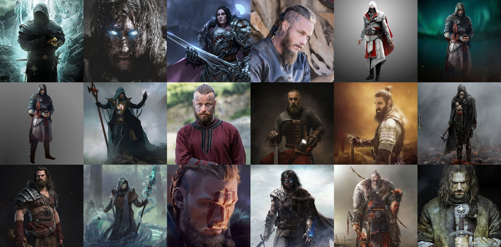
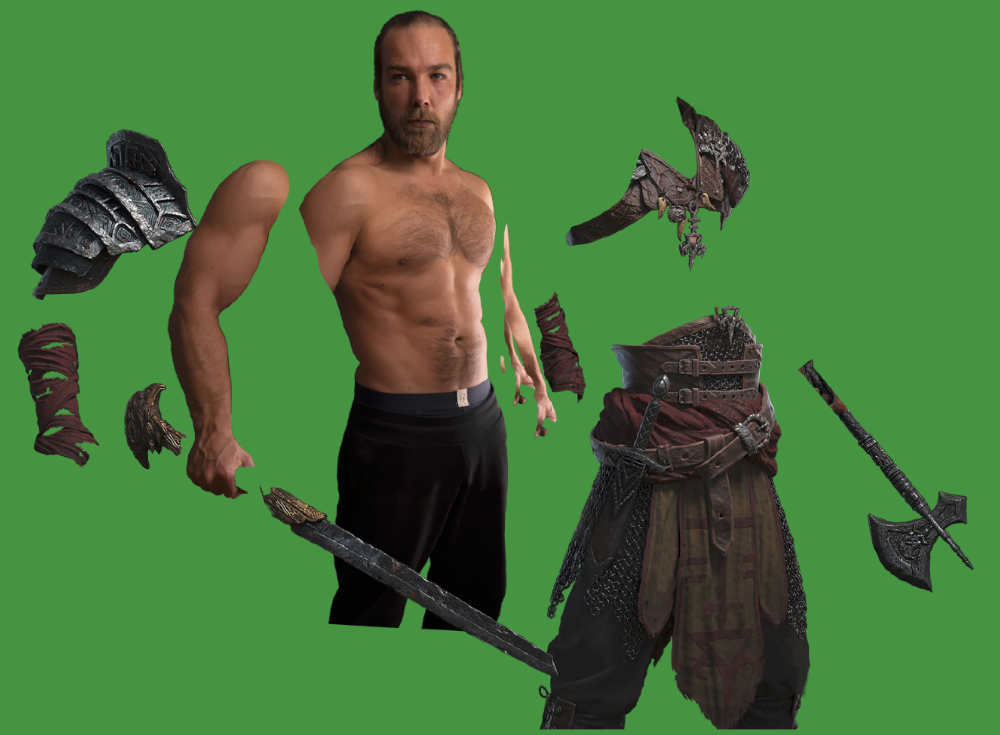
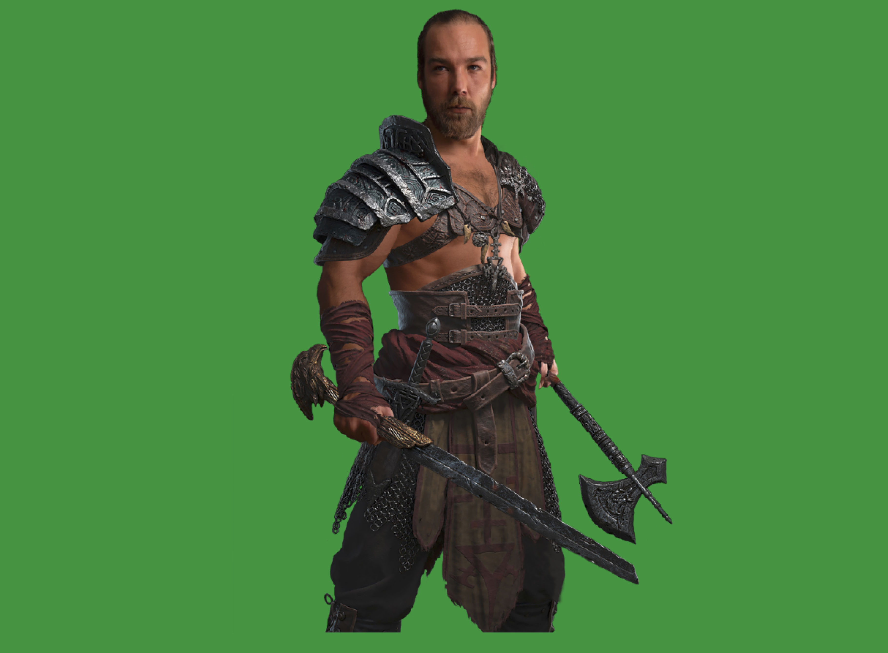
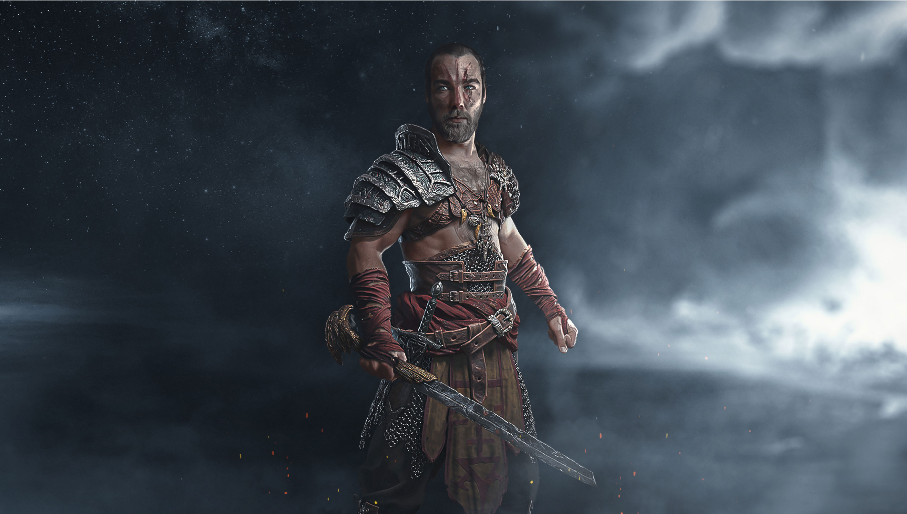

First of all, why I did this work?
The purpose was to practice my Photoshop skills and create something of high quality and cool appearance. After watching some YouTube videos, I found an idea to transform a person into a character. Like many photoshoppers, I decided to use myself as the subject and a warrior as the character. Why a warrior? There's no particular reason for that, just probably some subconscious choice, I guess.
The next task was to find some suitable references.
Find some refs
Google gave me these:

I liked these:


Take a matching picture of the subject (me)
Out of 20+ shots I’ve got the one that more or less fitted the task, but I could tell, that there’s going to be a lot of Photoshop.
Here’s the raw photo:

The character’s height, muscles and his body proportions in general were clearly nicer. But that’s where Photoshop practice comes in.
Find something to make my body look more brutal
This time the search wasn’t that hard and I’ve got these pictures to work with:


Let’s try and fit the warrior’s stuff on me
Well, after 2-3 evenings of editing, cutting and fitting (after work) I’ve got something that looked fine:

Oh wait.. I meant this:

At this point I didn’t like how the axe was looking and decided to get rid of it. And for some reason my left hand seemed to be too much behind me. So, I took one from another shot.
Here it is (already pumped, of course):

Body make-up
Now it was time to put a scar on my face, try those tattoos from the 3rd step and maybe do something else.


As for “something else”, I had to dye my hair a little. The scar was fine at this point. I also picked the right tattoo, because it fitted the clothes better.
Additionally, I added some more facial and overall drama:

All together
After adding shadows, lights, and color corrections to make it look like the clothes were actually on me, I got this:

The background
To simplify the explanation of the way I made my background, I have to just show those pretty layers:

As a result:
